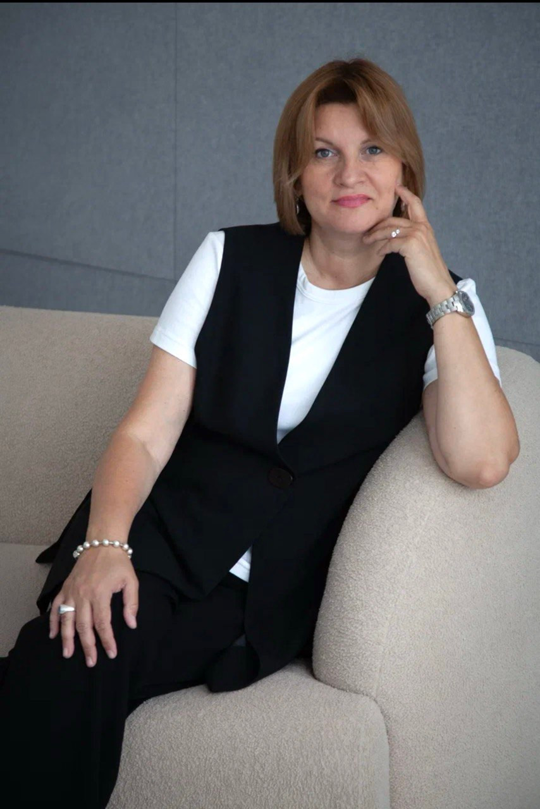
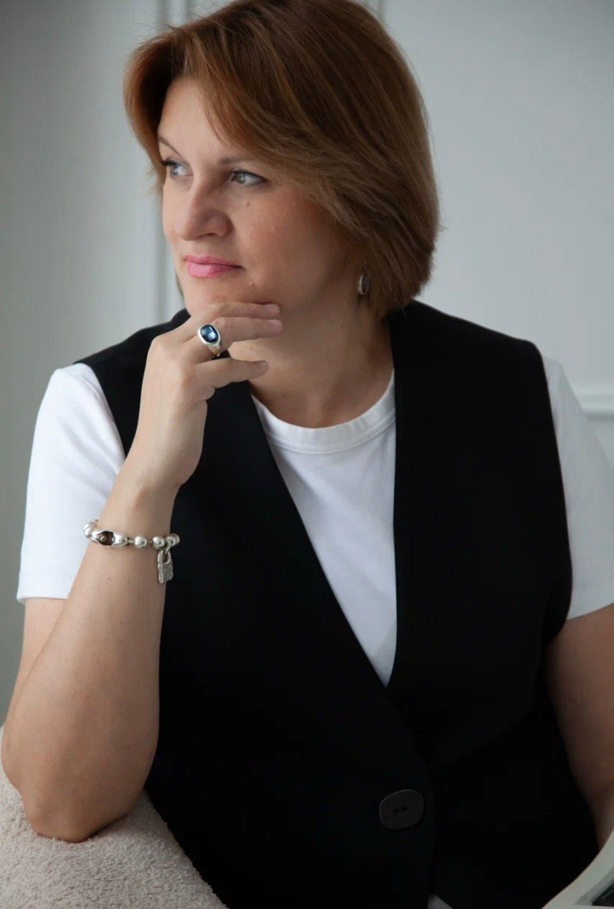

Психотерапия травмы и расстройств личности
Меня зовут Эльза Насырова. Я клинический психолог с 25-летней практикой, доцент департамента психологии НИУ ВШЭ и аккредитованный психолог-консультант Европейской ассоциации консультирования. Работаю со взрослыми и подростками с последствиями травмы, расстройствами личности, тревогой и трудностями в отношениях.

Обо мне
Моя практика началась в 2001 году в кризисном центре. Десять лет я работала с детьми и подростками, пережившими насилие и жестокое обращение. Эти годы сделали терапию травмы и её последствий моей главной специализацией.
Частную практику в психодинамическом подходе веду с 2003 года, с 2011 года работаю в модальности транзактного анализа, а с 2023 года в терапии, фокусированной на переносе (TFP). За годы работы накопилось более 16 000 часов практики со взрослыми, детьми, подростками, парами и семьями.
Клиническую работу я соединяю с академической. Преподаю в НИУ ВШЭ, исследую клиническую персонологию, психологию травмы и расстройств личности, супервизирую практикующих психологов.
«Психоаналитическая психотерапия и психоанализ, вероятно, это те методы, которые способствуют самым лучшим изменениям при серьёзных расстройствах личности».
С чем я работаю
Ко мне обращаются после тяжёлых событий, в затяжной тревоге, в кризисе отношений, когда справляться самостоятельно становится трудно. Первая встреча посвящена диагностике. Мы вместе определяем, что происходит и какой формат работы подойдёт именно вам.
-
Травма и её последствия
Последствия физического, психологического и сексуализированного насилия, жестокого обращения, тяжёлых событий прошлого.
-
Расстройства личности
Диагностика и длительная психотерапия личностных расстройств по модели Отто Кернберга, в модальности TFP.
-
Тревога и фобии
Тревожные расстройства, панические состояния, страхи, которые сужают жизнь и мешают решениям.
-
Подростковая психотерапия
Работа с детьми и подростками от 5 до 18 лет. Кризисы взросления, самоповреждение, трудности идентичности.
-
Детско-родительские отношения
Конфликты, потеря контакта с ребёнком, сложные периоды семьи. Работаю и с родителями, и с детьми.
-
Семейная и супружеская терапия
Кризисы пары, повторяющиеся конфликты, решения о будущем отношений.
Мой метод: терапия, фокусированная на переносе
TFP, Transference-Focused Psychotherapy, это современный метод психоаналитической психотерапии для лечения тяжёлых расстройств личности, прежде всего пограничного и нарциссического.
Расщеплённый внутренний мир
При тяжёлых расстройствах личности образы себя и других разделены на «только хорошие» и «только плохие».
Перенос в отношениях с терапевтом
Привычные паттерны оживают прямо на сессии, здесь и сейчас, где их можно увидеть, назвать и исследовать.
Интеграция личности
Разрозненные части соединяются в целостный, реалистичный образ себя и других людей.
автор метода, один из крупнейших психоаналитиков современности
эффективность подтверждена рандомизированными контролируемыми исследованиями
психодинамическая модель, лежащая в основе метода
Как устроена терапия
-
Структура и рамка
Чёткая последовательность шагов лечения и оговорённые временные рамки отличают TFP от классического психоанализа.
-
Цель шире, чем снятие симптомов
Лечение меняет саму личность. Улучшается повседневное функционирование, растёт удовлетворение от отношений и работы.
-
Результат
Стабильное, реалистичное и целостное восприятие себя и других людей, за которым следуют более тёплые отношения и эффективная адаптация.
Преподавание
С 2024 года я доцент департамента психологии НИУ ВШЭ, преподаю в Центре фундаментальной и консультативной персонологии факультета социальных наук. Веду курсы магистратуры:
- Психология личностных расстройствкурс
- Психотерапия личностных расстройствкурс
- «Клиническая персонология»семинар наставника
Образование и квалификация
-
1998–2003
Факультет психологии, МГОПУ им. М.А. Шолохова
Специалитет по психологии, квалификация «Психолог».
-
2003–2004
Клиническая психология
Профессиональная переподготовка, квалификация клинического психолога.
-
2011–2017
Российско-британская программа по консультированию и психотерапии
950 часов обучения и 200 часов супервизии. Европейская сертификация ЕАТА в модальности транзактного анализа.
-
2018–2019
Расстройства пищевого поведения
Специализированная программа, 50 часов.
-
2017–2026
Семинары Отто Кернберга
Более 150 часов диагностики и психотерапии расстройств личности.
-
2022–2024
Международный институт расстройств личности (МИРЛ)
Профессиональная переподготовка «Психотерапия, фокусированная на переносе», 256 академических часов. Стратегии и техники ТФП, лечение пограничного расстройства, ТФП с подростками, супервизии. Диплом с правом ведения профессиональной деятельности, итоговая аттестация на «отлично».
Членства и аккредитации
- Аккредитованный психолог-консультант Европейской ассоциации консультирования
- Член СОТА, Санкт-Петербургской организации транзактного анализа
- Член РОТФП, региональной группы развития ISTFP

Сертификаты и дипломы
Дипломы, удостоверения и сертификаты за 25 лет обучения, от специалитета и клинической переподготовки до семинаров Отто Кернберга, Нэнси Мак-Вильямс и европейской программы по транзактному анализу (ТА), 2000 часов общего тренинга (из них не менее 600 часов обучения и 150 часов супервизии). Нажмите на документ, чтобы рассмотреть его.
Листайте ленту вбок: в коллекции 82 документа
Семинары и мастер-классы
Помимо университета я провожу семинары и мастер-классы для психологов, студентов и специалистов помогающих профессий.
Записаться на консультацию
Напишите или позвоните, я отвечу лично.
+7 (910) 407-78-34- Emailelza.nasyrova@gmail.com
- КабинетМосква, ул. Барклая, 13с1
- МетроБагратионовская